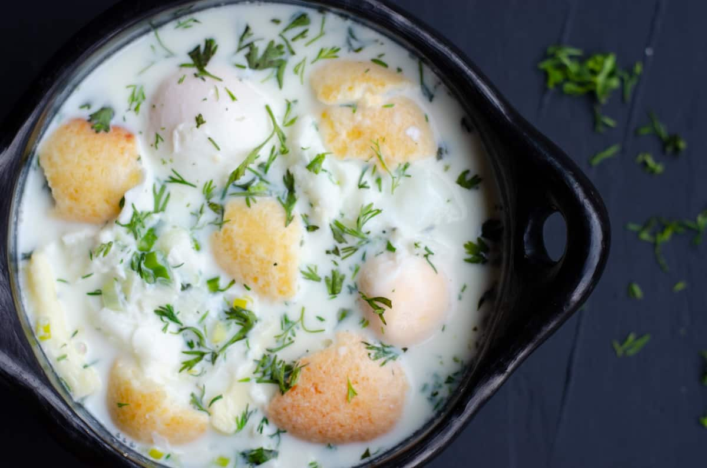

Changua

Ingredients
- 3 cups whole milk
- 1 cup water
- 2 large eggs
- 2-3 green onions (scallions), finely chopped (use mostly the green tops)
- 2 tbsp fresh cilantro, chopped
- 1 tbsp unsalted butter
- Salt and freshly ground black pepper, to taste
Steps
- Scallion sauté.
In a medium saucepan, melt the butter over medium heat. Add the green onions and cook for about 1 minute—just until fragrant, not browned.
- Milk bathPour in the water and milk. Add a pinch of salt and pepper (and cumin if using). Bring to a gentle simmer. Do not let it boil hard—scalded milk is the enemy.
- Egg dropWhen the milk is just simmering, carefully crack the eggs straight into the pot. Poach them gently for 3-4 minutes until the whites are set and the yolks are still runny.
- Final flourishSprinkle in the chopped cilantro, taste and adjust seasoning.
- Serve it right.Place the bread pieces in warm bowls. Ladle the hot milk-and-egg mixture over the bread so it soaks up the broth. Top with more cilantro or a grind of pepper if you like.